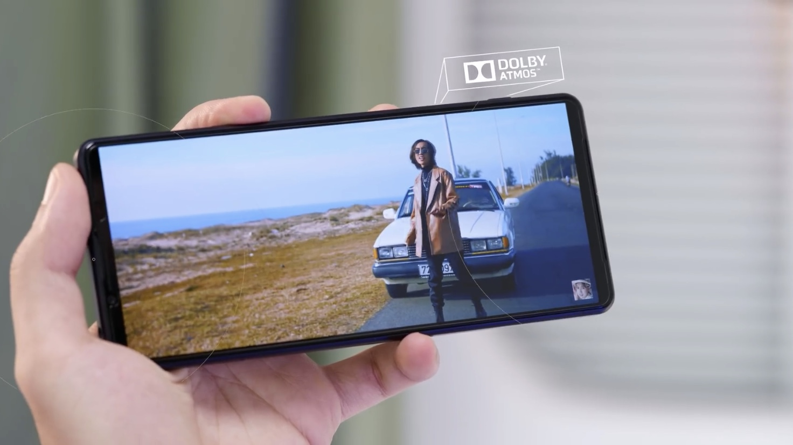
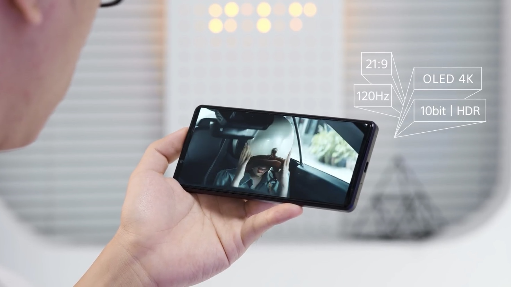
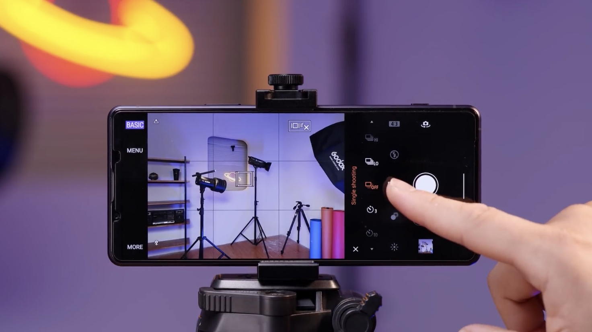
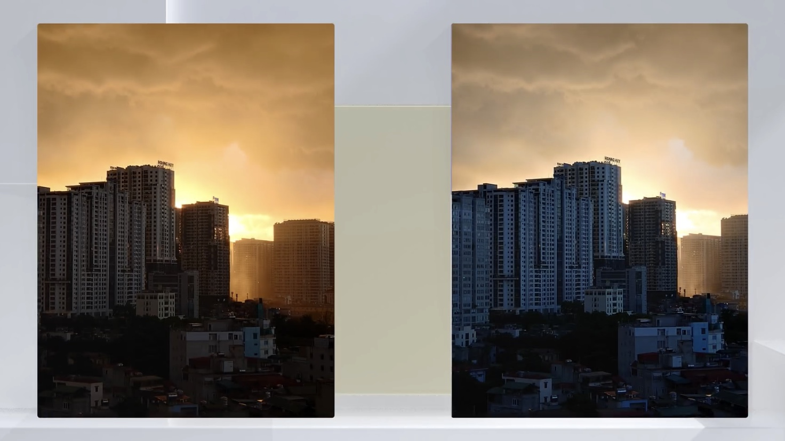
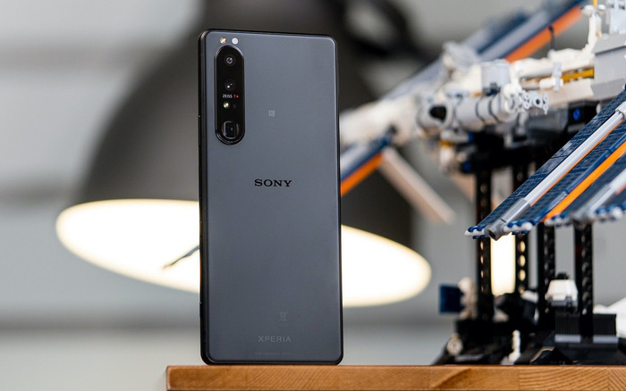

Sony's non-trendy design
Sony Xperia 1 iii still retains its masculine, square design, the device is quite long compared to other flagships available on the market. The back does not stick to fingerprints sweat. Camera cluster, Sony has added a new lens system that allows zooming with different focal lengths.
However, the point I am not satisfied with the device is the dual speaker cluster of the device. This speaker cluster delivers not too loud volume. Compared to the flagships I'm using, the volume is smaller. But in exchange, the machine produces a better sound quality, the bass and treble bands are better.

The device is no longer reset when we remove the sim. The device still supports external memory via micro SD card – something many other flagships have ignored. As well as the fact that Sony still retains the 3.5mm headphone jack. Sony and LG are smartphone brands that are highly appreciated for sound. When you use wired or wireless headphones, you can customize a lot of sound options such as 360 special sound effects (surround sound) with headphones also from Sony. Or that the machine supports Dobly Atmos to customize the modes when you watch movies, play games, ... Moreover, the machine also supports air filter technology when you plug the recording mic into the 3.5mm jack, the This helps you get a better sound quality when recording videos.
Sony's extremely impressive screen
With a screen with 4K resolution and 120Hz refresh rate, 21:9 10-bit color ratio, with HDR, the screen of the device offers a completely different experience from all other phones available. face on the market. My favorite point on the Xperia 1 III is the experience of "true overflow": no rabbit ears, no moles, no defects, every edge around the screen of the device is very thin.

The screen experience of the device is very good. When I watch movies on Netflix, the 4K screen provides high definition, although the Netflix stream only has full HD resolution, the device still gives an extremely impressive movie viewing experience in color with the 10-bit color screen.
About the ratio 21:9. When viewing some apps like stock apps, the device shows more content than other phones. But this rate also brings inconvenience when using some other apps. Like the fact that the device will have a black space when you use Instagram to view other people's stories, etc., giving an incomplete experience. There is this phenomenon that is due to the problem of "all shapes and sizes" of Android devices. The devices have different display parameters and designs, so it's understandable that the apps have not been able to develop to adapt in time.
About 120Hz screen refresh rate. Many brothers have wondered: Can the machine run at 4K resolution? Recently, GSMarena was recently announced by Sony that the 4K 120HZ function will not work continuously, but it works depending on certain applications and content. In most of the content, the device will only run with a 60Hz refresh rate. And the same goes for 4K resolution, it will also only work on certain content. This is another incomplete experience that Sony brings to users. However, this is also understandable when always for high resolution and high scanning frequency, the battery of the device will not be able to respond. Personally, I think whether the device is in 4K or Full HD resolution, basically experiencing this screen gives an extremely "happy" experience.
Performance of Xperia 1 III with Snapdragon 888
Hardware specifications: the device uses Snapdragon 888 chip with 12Gb Ram, 256Gb internal memory with UFS 3.1 standard, the device comes pre-installed with Android 11. With such parameters, the device will completely meet the normal tasks. smoothly. If you are looking for a machine with the smoothest experience, I will advise you to buy this machine.
Camera on Sony Xperia 1 III
Although there are a lot of upgrades, but for Sony's cameras, the more upgraded, the more "reversed". For Sony, a camera is just a camera. The Sony camera does not have too many shooting modes such as the night mode equipped on the top flagships of iPhone or Samsung. So does Sony's flagship have a night mode? The answer is yes, but Sony has a completely different way of expressing it.

The camera interface of the Xperia 1 III has two modes: Basic and Auto. When you take photos in Basic mode, the machine will automatically receive the scene that is appearing as the night time the machine will display the message "night scene" on the screen. But even so, the image quality is still not too different from normal photos, the image does not light up much, the details are still the same.

The normal image quality of Sony is still very good, the details are sharp, the colors are harmonious, the zoom modes are very good. But I still have to emphasize the night photography mode, the camera of the device gives me a bad feeling when shooting at night. Until I switched to Manual mode, adjusted the shutter speed, the image produced a clear difference in quality. In return, the camera is very susceptible to vibration, when in professional photography mode, you should have yourself a tripod.
There's not too much of a difference when comparing the Xperia 1 III's photography modes to other flagships. In my opinion, the device will only be suitable for users that 80% of them use the device to use a professional camera. If you are a normal user, you will only use the camera every day for the functions of taking texts or taking selfies to upload Instagram stories, etc., then you will not be suitable for this machine at all. Another annoying point is that when the battery is low, the device will not allow the camera to be used. This is very inconvenient when in some cases we need the cameraa feature in some emergency situations.
Battery life is not impressive
I rate the battery of this machine is not really good. The device has a 4500mAh battery and supports 30w fast charging. With such a battery capacity, the device can still only meet the onscreen time from 3.5 hours to 4 hours. Battery life isn't too impressive. That's not to mention I have not used 5G, if so, this machine will not last that long. The device still has a good feature inherited from its predecessor, which is the direct charging feature to use.
